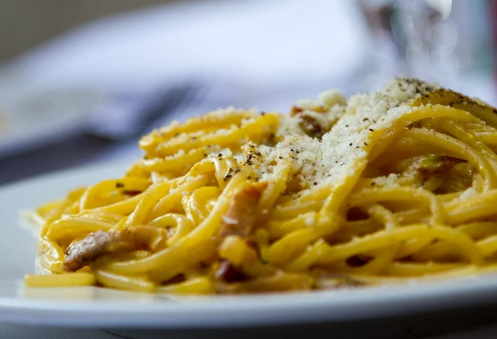

Lemon Pasta

Description
Lemon pasta is an interesting taste experience for those who are looking to try something new. It's easy to make and doesn't take much time. Note: final product may not match picture.
Preparing time: 10 minutes, cooking time: 8 minutes. Serves 4 people.
Ingredients
- 2 packs of curd
- 240-260 grams of spaghetti
- 2-3 handfuls of spinach
- 2-3 table spoons of olive oil
- 1 lemon skin
- 2-3 teaspoons of lemon juice
- 1-2 garlic cloves
- Salt
- Pepper
- Grated parmesan
- Thyme
- Parsley
Steps
- Boil the spaghetti in salted water until al dente.
- Pour some oil into the pan and fry the garlic.
- Add spinach and curd, grated lemon skin and juice.
- Mix the pasta with the curd mix and serve.
- Optionally, add parmesan and herbs.